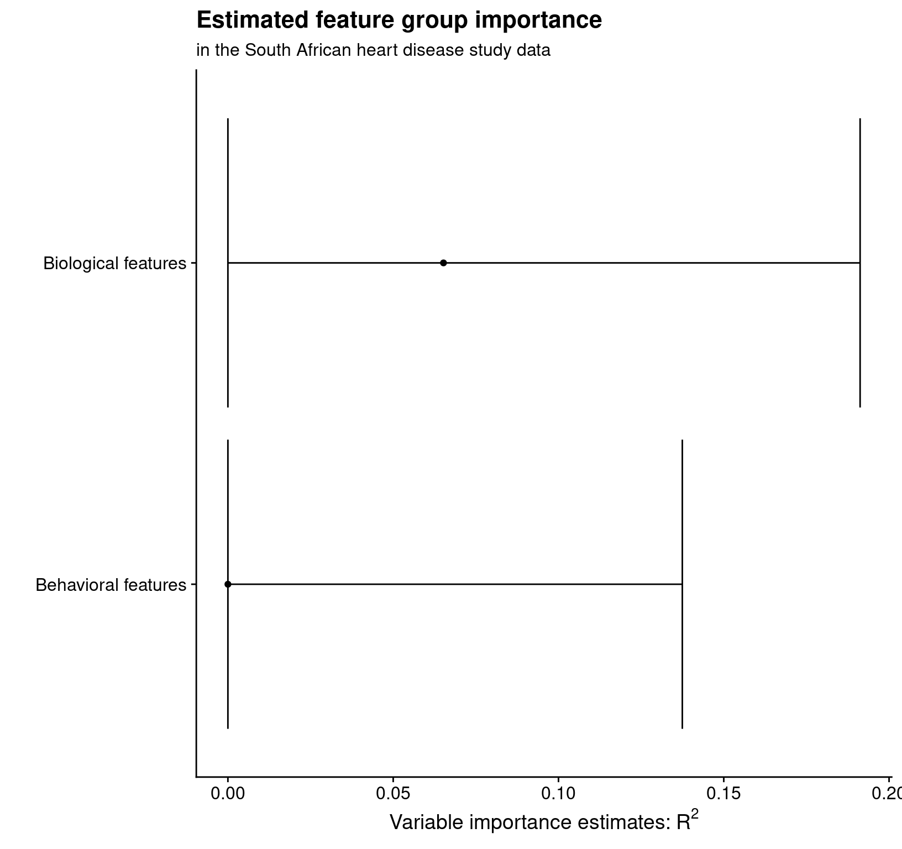

Introduction to vimp
Brian D. Williamson
2021-02-22
Source:vignettes/introduction-to-vimp.Rmd
introduction-to-vimp.RmdIntroduction
vimp is a package that computes nonparametric estimates of variable importance and provides valid inference on the true importance. The package supports flexible estimation of variable importance based on the difference in nonparametric \(R^2\), classification accuracy, and area under the receiver operating characteristic curve (AUC). These quantities are all nonparametric generalizations of the usual measures in simple parametric models (e.g., linear models). For more details, see the accompanying manuscripts Williamson, Gilbert, Carone, et al. (2020), Williamson, Gilbert, Simon, et al. (2020), and Williamson and Feng (2020).
Variable importance estimates may be computed quickly, depending on the techniques used to estimate the underlying conditional means — if these techniques are slow, then the variable importance procedure will be slow.
The code can handle arbitrary dimensions of features, and may be used to estimate the importance of any single feature or group of features for predicting the outcome. The package also includes functions for cross-validated importance.
The author and maintainer of the vimp package is Brian Williamson. The methods implemented here have also been implemented in Python under the package vimpy.
Installation
A stable version of the package may be downloaded and installed from CRAN. Type the following command in your R console to install the stable version of vimp:
A development version of the package may be downloaded and installed from GitHub using the devtools package. Type the following command in your R console to install the development version of vimp:
Quick Start
This section should serve as a quick guide to using the vimp package — we will cover the main functions for estimating \(R^2\)-based variable importance using a simulated data example. More details are given in the next section.
First, load the vimp package:
## vimp version 2.1.8: Perform Inference on Algorithm-Agnostic Variable Importance## Package created on 2021-02-22Next, create some data:
# -------------------------------------------------------------
# problem setup
# -------------------------------------------------------------
# set up the data
set.seed(5678910)
n <- 1000
p <- 2
s <- 1 # desire importance for X_1
x <- data.frame(replicate(p, runif(n, -1, 1)))
y <- (x[,1])^2*(x[,1]+7/5) + (25/9)*(x[,2])^2 + rnorm(n, 0, 1)
# set up folds for hypothesis testing
folds <- sample(rep(seq_len(2), length = length(y)))This creates a matrix of covariates x with two columns, a vector y of normally-distributed outcome values, and a set of folds for a sample of n = 100 study participants.
The workhorse function of vimp, for \(R^2\)-based variable importance, is vimp_rsquared. There are two ways to compute variable importance: in the first method, you allow vimp to run regressions for you and return variable importance; in the second method (discussed in “Using precomputed regression function estimates in vimp”), you run the regressions yourself and plug these into vimp. I will focus on the first method here. The basic arguments are
- Y: the outcome (in this example,
y) - X: the covariates (in this example,
x) - indx: the covariate(s) of interest for evaluating importance (here, either 1 or 2)
- run_regression: a logical value telling
vimp_rsquaredwhether or not to run a regression of Y on X (TRUEin this example) - SL.library: a “library” of learners to pass to the function
SuperLearner(sincerun_regression = TRUE) - V: the number of folds to use for cross-fitted variable importance
This second-to-last argument, SL.library, determines the estimators you want to use for the conditional mean of Y given X. Estimates of variable importance rely on good estimators of the conditional mean, so we suggest using flexible estimators and model stacking to do so. One option for this is the SuperLearner package; load that package using
## Loading required package: nnls## Super Learner## Version: 2.0-27-9000## Package created on 2019-08-12The code
est_1 <- vimp_rsquared(Y = y, X = x, indx = 1, run_regression = TRUE,
SL.library = c("SL.ranger", "SL.mean"), V = 2, env = environment())uses the Super Learner to fit the required regression functions, and computes an estimate of variable importance for the importance of \(X_1\). We can visualize the estimate, standard error, and confidence interval by printing or typing the object name:
## Variable importance estimates:
## Estimate SE 95% CI VIMP > 0 p-value
## s = 1 0.1320347 0.0401547 [0.05333291, 0.2107364] TRUE 0.0004653858## Variable importance estimates:
## Estimate SE 95% CI VIMP > 0 p-value
## s = 1 0.1320347 0.0401547 [0.05333291, 0.2107364] TRUE 0.0004653858This output shows that we have estimated the importance of \(X_1\) to be 0.132, with a 95% confidence interval of [0.053, 0.211].
Detailed guide
In this section, we provide a fuller example of estimating \(R^2\)-based variable importance in the context of the South African heart disease study data (Hastie, Tibshirani, and Friedman 2009).
Often when working with data we attempt to estimate the conditional mean of the outcome \(Y\) given features \(X\), defined as \(\mu_P(x) = E_P(Y \mid X = x)\).
There are many tools for estimating this conditional mean. We might choose a classical parametric tool such as linear regression. We might also want to be model-agnostic and use a more nonparametric approach to estimate the conditional mean. However,
- This involves using some nonparametric smoothing technique, which requires: (1) choosing a technique, and (2) selecting tuning parameters
- Naive optimal tuning balances out the bias and variance of the smoothing estimator. Is this the correct trade-off for estimating the conditional mean?
Once we have a good estimate of the conditional mean, it is often of scientific interest to understand which features contribute the most to the variation in \(\mu_P\). Specifically, we might consider \[\mu_{P, s}(x) = E_P(Y \mid X_{(-s)} = x_{(-s)}),\] where for a vector \(v\) and a set of indices \(s\), \(v_{-(s)}\) denotes the elements of \(v\) with index not in \(s\). By comparing \(\mu_{P, s}\) to \(\mu_P\) we can evaluate the importance of the \(s\)th element (or group of elements).
Assume that our data are generated according to the mechanism \(P_0\). We define the population \(R^2\) value of a given regression function \(\mu\) as \(R^2(\mu, P_0) = 1 - \frac{E_{P_0}\{Y - \mu(X)\}^2}{var_{P_0}(Y)}\), where the numerator of this expression is the population mean squared error and the denominator is the population variance. We can then define a nonparametric measure of variable importance, \[\psi_{0, s} = R^2(\mu_{P_0}, P_0) - R^2(\mu_{P_0,s}, P_0),\] which is the proportion of the variability in the outcome explained by including \(X_j\) in our chosen estimation technique.
This document introduces you to the basic tools in vimp and how to apply them to a dataset. I will explore one method for obtaining variable estimates using vimp: you only specify a library of candidate estimators for the conditional means \(\mu_{P_0}\) and \(\mu_{P_0, s}\); you allow vimp to obtain the optimal estimates of these quantities using the SuperLearner (van der Laan, Polley, and Hubbard 2007), and use these estimates to obtain variable importance estimates. A second method (using precomputed estimates of the regression functions) exists and is described in “Using precomputed regression function estimates in vimp”.
A look at the South African heart disease study data
Throughout this document I will use the South African heart disease study data (Hastie, Tibshirani, and Friedman 2009), freely available from the Elements of Statistical Learning website. Information about these data is available here.
# read in the data from the Elements website
library("RCurl")
heart_data <- read.csv(text = getURL("http://web.stanford.edu/~hastie/ElemStatLearn/datasets/SAheart.data"), header = TRUE, stringsAsFactors = FALSE)
# minor data cleaning
heart <- heart_data[, 2:dim(heart_data)[2]]
heart$famhist <- ifelse(heart$famhist == "Present", 1, 0)
# sample-splitting folds for hypothesis testing
heart_folds <- sample(rep(seq_len(2), length = dim(heart)[1]))In addition to the indicator of myocardial infarction chd, the outcome of interest, there are measurements on two groups of variables. First are behavioral features: cumulative tobacco consumption, current alcohol consumption, and type A behavior (a behavioral pattern linked to stress). Second are biological features: systolic blood pressure, low-density lipoprotein (LDL) cholesterol, adiposity (similar to body mass index), family history of heart disease, obesity, and age.
Since there are nine features and two groups, it is of interest to determine variable importance both for the nine individual features separately and for the two groups of features.
A first approach: linear regression
Suppose that I believe that a linear model truly describes the relationship between the outcome and the covariates in these data. In that case, I would be justified in only fitting a linear regression to estimate the conditional means; this means that in my importance analysis, I should also use only linear regression. Note that because I chose to fit the regression functions first and then plug them into vimp, I need to explicitly specify the folds used for hypothesis testing. The analysis is achieved by the following:
X <- heart[, -dim(heart)[2]]
lm_vim_sbp <- vim(Y = heart$chd, X = X, indx = 1, run_regression = TRUE, SL.library = "SL.lm", type = "r_squared")
lm_vim_tob <- vim(Y = heart$chd, X = X, indx = 2, run_regression = TRUE, SL.library = "SL.lm", type = "r_squared")
lm_vim_ldl <- vim(Y = heart$chd, X = X, indx = 3, run_regression = TRUE, SL.library = "SL.lm", type = "r_squared")
lm_vim_adi <- vim(Y = heart$chd, X = X, indx = 4, run_regression = TRUE, SL.library = "SL.lm", type = "r_squared")
lm_vim_fam <- vim(Y = heart$chd, X = X, indx = 5, run_regression = TRUE, SL.library = "SL.lm", type = "r_squared")
lm_vim_tpa <- vim(Y = heart$chd, X = X, indx = 6, run_regression = TRUE, SL.library = "SL.lm", type = "r_squared")
lm_vim_obe <- vim(Y = heart$chd, X = X, indx = 7, run_regression = TRUE, SL.library = "SL.lm", type = "r_squared")
lm_vim_alc <- vim(Y = heart$chd, X = X, indx = 8, run_regression = TRUE, SL.library = "SL.lm", type = "r_squared")
lm_vim_age <- vim(Y = heart$chd, X = X, indx = 9, run_regression = TRUE, SL.library = "SL.lm", type = "r_squared")
# make a table with the estimates using the merge_vim() function
library("dplyr")##
## Attaching package: 'dplyr'## The following objects are masked from 'package:stats':
##
## filter, lag## The following objects are masked from 'package:base':
##
## intersect, setdiff, setequal, unionlm_mat <- merge_vim(lm_vim_sbp, lm_vim_tob, lm_vim_ldl, lm_vim_adi,
lm_vim_fam, lm_vim_tpa, lm_vim_obe, lm_vim_alc, lm_vim_age)
# print out the matrix
lm_mat## Variable importance estimates:
## Estimate SE 95% CI VIMP > 0 p-value
## s = 6 0.2306968687 0.07754543 [0.07871062, 0.3826831] TRUE 0.0008709805
## s = 2 0.2297583908 0.07408769 [0.08454918, 0.3749676] TRUE 0.0014740077
## s = 1 0.1243845280 0.06401668 [0.00000000, 0.2498549] TRUE 0.0323404939
## s = 9 0.0931209210 0.06962164 [0.00000000, 0.2295768] FALSE 0.0935529736
## s = 7 0.0845631815 0.07720069 [0.00000000, 0.2358737] FALSE 0.1308871251
## s = 4 0.0754359734 0.07307546 [0.00000000, 0.2186612] FALSE 0.1545292248
## s = 5 0.0393849670 0.06391775 [0.00000000, 0.1646615] FALSE 0.2698421118
## s = 8 0.0299019189 0.07034801 [0.00000000, 0.1677815] FALSE 0.3314648344
## s = 3 0.0003397151 0.06646206 [0.00000000, 0.1306030] FALSE 0.4979267053Building a library of learners
In general, we don’t believe that a linear model truly holds. Thinking about potential model misspecification leads us to consider other algorithms. Suppose that I prefer to use generalized additive models (Hastie and Tibshirani 1990) to estimate \(\mu_{P_0}\) and \(\mu_{P_0, s}\), so I am planning on using the gam package. Suppose that you prefer to use the elastic net (Zou and Hastie 2005), and are planning to use the glmnet package.
The choice of either method is somewhat subjective, and I also will have to use a technique like cross-validation to determine an optimal tuning parameter in each case. It is also possible that neither additive models nor the elastic net will do a good job estimating the true conditional means!
This motivates using SuperLearner to allow the data to determine the optimal combination of base learners from a library that I define. These base learners are a combination of different methods (e.g., generalized additive models and elastic net) and instances of the same method with different tuning parameter values (e.g., additive models with 3 and 4 degrees of freedom). The Super Learner is an example of model stacking, or model aggregation — these approaches use a data-adaptive combination of base learners to make predictions.
For instance, my library could include the elastic net, random forests (Breiman 2001), and gradient boosted trees (Friedman 2001) as follows:
# load the library
library(SuperLearner)
# create a function for boosted stumps
SL.gbm.1 <- function(..., interaction.depth = 1) SL.gbm(..., interaction.depth = interaction.depth)
# create GAMs with different degrees of freedom
SL.gam.3 <- function(..., deg.gam = 3) SL.gam(..., deg.gam = deg.gam)
SL.gam.4 <- function(..., deg.gam = 4) SL.gam(..., deg.gam = deg.gam)
SL.gam.5 <- function(..., deg.gam = 5) SL.gam(..., deg.gam = deg.gam)
# add more levels of alpha for glmnet
create.SL.glmnet <- function(alpha = c(0.25, 0.5, 0.75)) {
for (mm in seq(length(alpha))) {
eval(parse(file = "", text = paste('SL.glmnet.', alpha[mm], '<- function(..., alpha = ', alpha[mm], ') SL.glmnet(..., alpha = alpha)', sep = '')), envir = .GlobalEnv)
}
invisible(TRUE)
}
create.SL.glmnet()
# add tuning parameters for randomForest
create.SL.randomForest <- function(tune = list(mtry = c(1, 5, 7), nodesize = c(1, 5, 10))) {
tuneGrid <- expand.grid(tune, stringsAsFactors = FALSE)
for (mm in seq(nrow(tuneGrid))) {
eval(parse(file = "", text = paste("SL.randomForest.", mm, "<- function(..., mtry = ", tuneGrid[mm, 1], ", nodesize = ", tuneGrid[mm, 2], ") SL.randomForest(..., mtry = mtry, nodesize = nodesize)", sep = "")), envir = .GlobalEnv)
}
invisible(TRUE)
}
create.SL.randomForest()
# create the library
learners <- c("SL.glmnet", "SL.glmnet.0.25", "SL.glmnet.0.5", "SL.glmnet.0.75",
"SL.randomForest", "SL.randomForest.1", "SL.randomForest.2", "SL.randomForest.3",
"SL.randomForest.4", "SL.randomForest.5", "SL.randomForest.6", "SL.randomForest.7",
"SL.randomForest.8", "SL.randomForest.9",
"SL.gbm.1")Now that I have created the library of learners, I can move on to estimating variable importance.
Estimating variable importance for a single variable
The main function for R-squared-based variable importance in the vimp package is the vimp_rsquared() function. There are five main arguments to vimp_rsquared():
Y, the outcomeX, the covariatesindx, which determines the feature I want to estimate variable importance forSL.library, the library of candidate learnersV, the number of cross-validation folds to use for computing variable importance
The main arguments differ if precomputed regression function estimates are used; please see “Using precomputed regression function estimates in vimp” for further discussion of this case.
Suppose that the first feature that I want to estimate variable importance for is family history of heart disease, fam. Then supplying vimp_rsquared() with
Y = heart$chdX = Xindx = 5SL.library = learnersV = 5
means that:
- I want to use
SuperLearner()to estimate the conditional means \(\mu_{P_0}\) and \(\mu_{P_0,s}\), and my candidate library islearners - I want to estimate variable importance for the fifth column of the South African heart disease study covariates, which is
fam - I want to use five-fold cross-fitting to estimate importance
The call to vimp_rsquared() looks like this:
# load the library
library("vimp")
# now estimate variable importance
vimp_rsquared(Y = heart$chd, X = X,
indx = 5, run_regression = TRUE, SL.library = learners, V = 5)While this is the preferred method for estimating variable importance, using a large library of learners may cause the function to take time to run. Usually this is okay — in general, you took a long time to collect the data, so letting an algorithm run for a few hours should not be an issue.
However, for the sake of illustration, I can estimate varibable importance for family history only using only using a small library, a small number of cross-validation folds in the Super Learner, and a small number of cross-fitting folds as follows (again, I suggest using a larger number of folds and a larger library in practice):
# load the library
library("vimp")
# small learners library
learners.2 <- c("SL.ranger")
# small number of cross-fitting folds
V <- 2
# small number of CV folds for Super Learner
sl_cvcontrol <- list(V = 2)
# now estimate variable importance
fam_vim <- vimp_rsquared(Y = heart$chd, X = as.data.frame(heart[, -dim(heart)[2]]), indx = 5, SL.library = learners.2, na.rm = TRUE, env = environment(), V = V, cvControl = sl_cvcontrol)## Warning in cv_vim(Y = Y, X = X, f1 = f1, f2 = f2, indx = indx, V = V, type =
## "r_squared", : Original estimate < 0; returning zero.This code takes approximately 5 seconds to run on a (not very fast) PC. I can display these estimates:
## Variable importance estimates:
## Estimate SE 95% CI VIMP > 0 p-value
## s = 5 0 0.06067205 [0, 0.118915] FALSE 0.9136594The object returned by vimp_rsquared() also contains fitted values from using SuperLearner(); I access these using $full_fit and $red_fit. For example,
## [[1]]
## [,1]
## [1,] 0.58860000
## [2,] 0.46750000
## [3,] 0.55396667
## [4,] 0.16586667
## [5,] 0.53133333
## [6,] 0.51126667
## [7,] 0.47723333
## [8,] 0.30333333
## [9,] 0.17800000
## [10,] 0.47046667
## [11,] 0.46123333
## [12,] 0.02520000
## [13,] 0.08663333
## [14,] 0.15913333
## [15,] 0.11023333
## [16,] 0.09736667
## [17,] 0.16700000
## [18,] 0.39280000
## [19,] 0.54893333
## [20,] 0.59936667
## [21,] 0.06646667
## [22,] 0.23620000
## [23,] 0.35260000
## [24,] 0.09186667
## [25,] 0.58176667
## [26,] 0.21020000
## [27,] 0.45703333
## [28,] 0.16130000
## [29,] 0.44070000
## [30,] 0.30410000
## [31,] 0.75393333
## [32,] 0.68286667
## [33,] 0.33980000
## [34,] 0.08643333
## [35,] 0.17996667
## [36,] 0.65190000
## [37,] 0.54836667
## [38,] 0.17126667
## [39,] 0.33243333
## [40,] 0.39550000
## [41,] 0.65530000
## [42,] 0.44726667
## [43,] 0.23056667
## [44,] 0.43996667
## [45,] 0.25703333
## [46,] 0.50573333
## [47,] 0.21950000
## [48,] 0.65590000
## [49,] 0.33476667
## [50,] 0.42123333
## [51,] 0.40263333
## [52,] 0.22720000
## [53,] 0.07206667
## [54,] 0.28566667
## [55,] 0.15250000
## [56,] 0.59216667
## [57,] 0.04670000
## [58,] 0.47380000
## [59,] 0.54116667
## [60,] 0.58276667
## [61,] 0.53076667
## [62,] 0.50150000
## [63,] 0.13280000
## [64,] 0.31263333
## [65,] 0.25990000
## [66,] 0.58370000
## [67,] 0.51666667
## [68,] 0.19746667
## [69,] 0.42953333
## [70,] 0.30333333
## [71,] 0.39396667
## [72,] 0.20323333
## [73,] 0.42146667
## [74,] 0.46886667
## [75,] 0.09813333
## [76,] 0.24993333
## [77,] 0.04420000
## [78,] 0.57163333
## [79,] 0.22793333
## [80,] 0.43110000
## [81,] 0.34016667
## [82,] 0.44313333
## [83,] 0.46963333
## [84,] 0.53403333
## [85,] 0.46316667
## [86,] 0.29736667
## [87,] 0.41506667
## [88,] 0.16056667
## [89,] 0.14333333
## [90,] 0.39303333
## [91,] 0.67220000
## [92,] 0.16536667
## [93,] 0.32390000
## [94,] 0.55773333
## [95,] 0.08520000
## [96,] 0.28603333
## [97,] 0.08676667
## [98,] 0.33370000
## [99,] 0.23973333
## [100,] 0.22266667
## [101,] 0.24870000
## [102,] 0.41706667
## [103,] 0.37433333
## [104,] 0.55760000
## [105,] 0.52373333
## [106,] 0.23700000
## [107,] 0.49853333
## [108,] 0.57810000
## [109,] 0.30933333
## [110,] 0.58840000
## [111,] 0.06886667
## [112,] 0.23843333
## [113,] 0.23146667
## [114,] 0.11340000
## [115,] 0.18396667
## [116,] 0.19246667
##
## [[2]]
## [,1]
## [1,] 0.20346667
## [2,] 0.05783333
## [3,] 0.69640000
## [4,] 0.48350000
## [5,] 0.45460000
## [6,] 0.34390000
## [7,] 0.46450000
## [8,] 0.58070000
## [9,] 0.16296667
## [10,] 0.42276667
## [11,] 0.36716667
## [12,] 0.49880000
## [13,] 0.21940000
## [14,] 0.79166667
## [15,] 0.12316667
## [16,] 0.38653333
## [17,] 0.17146667
## [18,] 0.30490000
## [19,] 0.16553333
## [20,] 0.13443333
## [21,] 0.29426667
## [22,] 0.12440000
## [23,] 0.18286667
## [24,] 0.20953333
## [25,] 0.20326667
## [26,] 0.45086667
## [27,] 0.16363333
## [28,] 0.19426667
## [29,] 0.12786667
## [30,] 0.44326667
## [31,] 0.54516667
## [32,] 0.29043333
## [33,] 0.26800000
## [34,] 0.26810000
## [35,] 0.20883333
## [36,] 0.44626667
## [37,] 0.52000000
## [38,] 0.13210000
## [39,] 0.42776667
## [40,] 0.31133333
## [41,] 0.19283333
## [42,] 0.59506667
## [43,] 0.71590000
## [44,] 0.59876667
## [45,] 0.11986667
## [46,] 0.53370000
## [47,] 0.18016667
## [48,] 0.22516667
## [49,] 0.56656667
## [50,] 0.69576667
## [51,] 0.19866667
## [52,] 0.25393333
## [53,] 0.50123333
## [54,] 0.24620000
## [55,] 0.21236667
## [56,] 0.70506667
## [57,] 0.53060000
## [58,] 0.09936667
## [59,] 0.39926667
## [60,] 0.47340000
## [61,] 0.33186667
## [62,] 0.13536667
## [63,] 0.55360000
## [64,] 0.39953333
## [65,] 0.13503333
## [66,] 0.17533333
## [67,] 0.63356667
## [68,] 0.12983333
## [69,] 0.13980000
## [70,] 0.24160000
## [71,] 0.37623333
## [72,] 0.13806667
## [73,] 0.07943333
## [74,] 0.34470000
## [75,] 0.20730000
## [76,] 0.60220000
## [77,] 0.59610000
## [78,] 0.23920000
## [79,] 0.17623333
## [80,] 0.63330000
## [81,] 0.41706667
## [82,] 0.65873333
## [83,] 0.29120000
## [84,] 0.08093333
## [85,] 0.43763333
## [86,] 0.72013333
## [87,] 0.56246667
## [88,] 0.44190000
## [89,] 0.18696667
## [90,] 0.23393333
## [91,] 0.46790000
## [92,] 0.40660000
## [93,] 0.44043333
## [94,] 0.18023333
## [95,] 0.17480000
## [96,] 0.53920000
## [97,] 0.28363333
## [98,] 0.59393333
## [99,] 0.13090000
## [100,] 0.64650000
## [101,] 0.31426667
## [102,] 0.22980000
## [103,] 0.18800000
## [104,] 0.09533333
## [105,] 0.31186667
## [106,] 0.51140000
## [107,] 0.72446667
## [108,] 0.21386667
## [109,] 0.21326667
## [110,] 0.12743333
## [111,] 0.19116667
## [112,] 0.36003333
## [113,] 0.32796667
## [114,] 0.42933333
## [115,] 0.45110000## [[1]]
## [,1]
## [1,] 0.28380735
## [2,] 0.40331392
## [3,] 0.07090634
## [4,] 0.51798858
## [5,] 0.58516301
## [6,] 0.32960125
## [7,] 0.45714019
## [8,] 0.48346931
## [9,] 0.43820300
## [10,] 0.11125125
## [11,] 0.46296540
## [12,] 0.58721350
## [13,] 0.50220221
## [14,] 0.65967085
## [15,] 0.25599469
## [16,] 0.53141093
## [17,] 0.24717160
## [18,] 0.08743377
## [19,] 0.18183548
## [20,] 0.35443256
## [21,] 0.64857938
## [22,] 0.19713325
## [23,] 0.33451562
## [24,] 0.29497058
## [25,] 0.04477937
## [26,] 0.15399466
## [27,] 0.49364856
## [28,] 0.23225972
## [29,] 0.47052194
## [30,] 0.51197019
## [31,] 0.15773714
## [32,] 0.02637028
## [33,] 0.67373936
## [34,] 0.26617573
## [35,] 0.37701313
## [36,] 0.31973713
## [37,] 0.02550608
## [38,] 0.28692110
## [39,] 0.23337586
## [40,] 0.05714497
## [41,] 0.51271565
## [42,] 0.31027472
## [43,] 0.19370349
## [44,] 0.22463344
## [45,] 0.36485901
## [46,] 0.49243082
## [47,] 0.03075477
## [48,] 0.41284166
## [49,] 0.45002388
## [50,] 0.55571851
## [51,] 0.03373975
## [52,] 0.06308946
## [53,] 0.36446220
## [54,] 0.14155699
## [55,] 0.40746811
## [56,] 0.55429256
## [57,] 0.08473007
## [58,] 0.33726958
## [59,] 0.30080094
## [60,] 0.30875212
## [61,] 0.13840392
## [62,] 0.51788770
## [63,] 0.07075155
## [64,] 0.30815368
## [65,] 0.45740437
## [66,] 0.58426181
## [67,] 0.44580638
## [68,] 0.57179039
## [69,] 0.33841573
## [70,] 0.43816120
## [71,] 0.48972476
## [72,] 0.04544682
## [73,] 0.15694909
## [74,] 0.50700450
## [75,] 0.06300933
## [76,] 0.42285264
## [77,] 0.23988274
## [78,] 0.48330466
## [79,] 0.47225684
## [80,] 0.15637678
## [81,] 0.33737432
## [82,] 0.45285920
## [83,] 0.52647765
## [84,] 0.55918191
## [85,] 0.54191092
## [86,] 0.18072404
## [87,] 0.46903920
## [88,] 0.54208824
## [89,] 0.28692777
## [90,] 0.55848480
## [91,] 0.48031639
## [92,] 0.31990909
## [93,] 0.62202938
## [94,] 0.25395547
## [95,] 0.49104686
## [96,] 0.36715154
## [97,] 0.62564090
## [98,] 0.51280398
## [99,] 0.55643238
## [100,] 0.51680172
## [101,] 0.09039983
## [102,] 0.53585794
## [103,] 0.29009759
## [104,] 0.63967067
## [105,] 0.28167404
## [106,] 0.54975427
## [107,] 0.26158594
## [108,] 0.23172248
## [109,] 0.43179719
## [110,] 0.04986515
## [111,] 0.07221626
## [112,] 0.02166060
## [113,] 0.06644694
## [114,] 0.10943394
## [115,] 0.66937865
## [116,] 0.53364045
##
## [[2]]
## [,1]
## [1,] 0.643554626
## [2,] 0.344801659
## [3,] 0.131160181
## [4,] 0.290687233
## [5,] 0.011270687
## [6,] 0.606885376
## [7,] 0.542024128
## [8,] 0.514418044
## [9,] 0.378213099
## [10,] 0.089313951
## [11,] 0.078929408
## [12,] 0.361403254
## [13,] 0.147575527
## [14,] 0.044508774
## [15,] 0.455680589
## [16,] 0.008446883
## [17,] 0.275838738
## [18,] 0.336127501
## [19,] 0.315675141
## [20,] 0.502014534
## [21,] 0.261991959
## [22,] 0.405929590
## [23,] 0.556957050
## [24,] 0.519100061
## [25,] 0.147063123
## [26,] 0.440406693
## [27,] 0.089492127
## [28,] 0.387172086
## [29,] 0.594881244
## [30,] 0.406662487
## [31,] 0.118624718
## [32,] 0.239283884
## [33,] 0.627389421
## [34,] 0.176379939
## [35,] 0.262892791
## [36,] 0.062090879
## [37,] 0.031008090
## [38,] 0.076088540
## [39,] 0.491975773
## [40,] 0.005219068
## [41,] 0.598302359
## [42,] 0.508299527
## [43,] 0.574818334
## [44,] 0.598671786
## [45,] 0.196822532
## [46,] 0.292974313
## [47,] 0.326512131
## [48,] 0.065675477
## [49,] 0.160106428
## [50,] 0.024961320
## [51,] 0.635569879
## [52,] 0.073355319
## [53,] 0.377143161
## [54,] 0.136337583
## [55,] 0.378919781
## [56,] 0.643531670
## [57,] 0.635134821
## [58,] 0.610644799
## [59,] 0.422421041
## [60,] 0.018657063
## [61,] 0.542308349
## [62,] 0.175449712
## [63,] 0.626580606
## [64,] 0.438718226
## [65,] 0.414370001
## [66,] 0.015433653
## [67,] 0.577566584
## [68,] 0.043054308
## [69,] 0.078414066
## [70,] 0.590954344
## [71,] 0.566867224
## [72,] 0.320160988
## [73,] 0.170872652
## [74,] 0.022306208
## [75,] 0.034822017
## [76,] 0.200717886
## [77,] 0.347206521
## [78,] 0.435710266
## [79,] 0.126032222
## [80,] 0.370027830
## [81,] 0.078180598
## [82,] 0.227966214
## [83,] 0.015247692
## [84,] 0.541366253
## [85,] 0.521750664
## [86,] 0.160398992
## [87,] 0.567177950
## [88,] 0.286913943
## [89,] 0.478049947
## [90,] 0.075623133
## [91,] 0.559897256
## [92,] 0.152850791
## [93,] 0.432014747
## [94,] 0.420544626
## [95,] 0.562514117
## [96,] 0.465270031
## [97,] 0.625411551
## [98,] 0.255236099
## [99,] 0.621238120
## [100,] 0.595599046
## [101,] 0.147297657
## [102,] 0.100435888
## [103,] 0.023604357
## [104,] 0.032169862
## [105,] 0.026781933
## [106,] 0.142296748
## [107,] 0.257419619
## [108,] 0.006018821
## [109,] 0.117231268
## [110,] 0.099769404
## [111,] 0.086977207
## [112,] 0.115717120
## [113,] 0.368722489
## [114,] 0.328202510
## [115,] 0.327776303I can obtain estimates for the remaining individual features in the same way (again using only using a small library for illustration):
# set up the data, removing the columns for alcohol use and chd
x <- as.data.frame(heart[, -dim(heart)[2]])
# estimate variable importance
tpa_vim <- vimp_rsquared(Y = heart$chd, X = x, indx = 6, SL.library = learners.2, na.rm = TRUE, env = environment(), V = V, cvControl = sl_cvcontrol)## Warning in cv_vim(Y = Y, X = X, f1 = f1, f2 = f2, indx = indx, V = V, type =
## "r_squared", : Original estimate < 0; returning zero.alc_vim <- vimp_rsquared(Y = heart$chd, X = x, indx = 8, SL.library = learners.2, na.rm = TRUE, env = environment(), V = V, cvControl = sl_cvcontrol)## Warning in cv_vim(Y = Y, X = X, f1 = f1, f2 = f2, indx = indx, V = V, type =
## "r_squared", : Original estimate < 0; returning zero.sbp_vim <- vimp_rsquared(Y = heart$chd, X = x, indx = 1, SL.library = learners.2, na.rm = TRUE, env = environment(), V = V, cvControl = sl_cvcontrol)## Warning in cv_vim(Y = Y, X = X, f1 = f1, f2 = f2, indx = indx, V = V, type =
## "r_squared", : Original estimate < 0; returning zero.tob_vim <- vimp_rsquared(Y = heart$chd, X = x, indx = 2, SL.library = learners.2, na.rm = TRUE, env = environment(), V = V, cvControl = sl_cvcontrol)
ldl_vim <- vimp_rsquared(Y = heart$chd, X = x, indx = 3, SL.library = learners.2, na.rm = TRUE, env = environment(), V = V, cvControl = sl_cvcontrol)
adi_vim <- vimp_rsquared(Y = heart$chd, X = x, indx = 4, SL.library = learners.2, na.rm = TRUE, env = environment(), V = V, cvControl = sl_cvcontrol)## Warning in cv_vim(Y = Y, X = X, f1 = f1, f2 = f2, indx = indx, V = V, type =
## "r_squared", : Original estimate < 0; returning zero.obe_vim <- vimp_rsquared(Y = heart$chd, X = x, indx = 7, SL.library = learners.2, na.rm = TRUE, env = environment(), V = V, cvControl = sl_cvcontrol)
age_vim <- vimp_rsquared(Y = heart$chd, X = x, indx = 9, SL.library = learners.2, na.rm = TRUE, env = environment(), V = V, cvControl = sl_cvcontrol)Now that I have estimates of each of individual feature’s variable importance, I can view them all simultaneously by plotting:
##
## ********************************************************## Note: As of version 1.0.0, cowplot does not change the## default ggplot2 theme anymore. To recover the previous## behavior, execute:
## theme_set(theme_cowplot())## ********************************************************theme_set(theme_cowplot())
# combine the objects together
ests <- merge_vim(sbp_vim, tob_vim, ldl_vim, adi_vim,
fam_vim, tpa_vim, obe_vim, alc_vim, age_vim)
all_vars <- c("Sys. blood press.", "Tobacco consump.", "LDL cholesterol",
"Adiposity", "Family history", "Type A behavior", "Obesity",
"Alcohol consump.", "Age")
est_plot_tib <- ests$mat %>%
mutate(
var_fct = rev(factor(s, levels = ests$mat$s,
labels = all_vars[as.numeric(ests$mat$s)],
ordered = TRUE))
)
# plot
est_plot_tib %>%
ggplot(aes(x = est, y = var_fct)) +
geom_point() +
geom_errorbarh(aes(xmin = cil, xmax = ciu)) +
xlab(expression(paste("Variable importance estimates: ", R^2, sep = ""))) +
ylab("") +
ggtitle("Estimated individual feature importance") +
labs(subtitle = "in the South African heart disease study data")
Estimating variable importance for a group of variables
Now that I have estimated variable importance for each of the individual features, I can estimate variable importance for each of the groups that I mentioned above: biological and behavioral features.
The only difference between estimating variable importance for a group of features rather than an individual feature is that now I specify a vector for s; I can use any of the options listed in the previous section to compute these estimates.
# get the estimates
behav_vim <- vimp_rsquared(Y = heart$chd, X = x, indx = c(2, 6, 8), SL.library = learners.2, na.rm = TRUE, env = environment(), V = V, cvControl = sl_cvcontrol)## Warning in cv_vim(Y = Y, X = X, f1 = f1, f2 = f2, indx = indx, V = V, type =
## "r_squared", : Original estimate < 0; returning zero.bios_vim <- vimp_rsquared(Y = heart$chd, X = x, indx = c(1, 3, 4, 5, 7, 9), SL.library = learners.2, na.rm = TRUE, env = environment(), V = V, cvControl = sl_cvcontrol)
# combine and plot
groups <- merge_vim(behav_vim, bios_vim)
all_grp_nms <- c("Behavioral features", "Biological features")
grp_plot_tib <- groups$mat %>%
mutate(
grp_fct = factor(case_when(
s == "2,6,8" ~ "1",
s == "1,3,4,5,7,9" ~ "2"
), levels = c("1", "2"), labels = all_grp_nms, ordered = TRUE)
)
grp_plot_tib %>%
ggplot(aes(x = est, y = grp_fct)) +
geom_point() +
geom_errorbarh(aes(xmin = cil, xmax = ciu)) +
xlab(expression(paste("Variable importance estimates: ", R^2, sep = ""))) +
ylab("") +
ggtitle("Estimated feature group importance") +
labs(subtitle = "in the South African heart disease study data")
Types of population variable importance
In this document, I have focused on one particular definition of population variable importance that I call conditional variable importance. For a further discussion of what I call marginal variable importance and Shapley population variable importance, please see “Types of VIMs”.
References
Breiman, L. 2001. “Random Forests” 45.
Friedman, JH. 2001. “Greedy Function Approximation: A Gradient Boosting Machine.”
Hastie, TJ, and RJ Tibshirani. 1990. Generalized Additive Models. Vol. 43. CRC Press.
Hastie, T, R Tibshirani, and J Friedman. 2009. The Elements of Statistical Learning.
van der Laan, MJ, EC Polley, and AE Hubbard. 2007. “Super Learner” 6.
Williamson, Brian D, and Jean Feng. 2020. “Efficient Nonparametric Statistical Inference on Population Feature Importance Using Shapley Values.” https://arxiv.org/abs/2006.09481.
Williamson, Brian D, Peter B Gilbert, Marco Carone, and Noah Simon. 2020. “Nonparametric Variable Importance Assessment Using Machine Learning Techniques.”
Williamson, Brian D, Peter B Gilbert, Noah Simon, and Marco Carone. 2020. “A Unified Approach for Inference on Algorithm-Agnostic Variable Importance.” https://arxiv.org/abs/2004.03683.
Zou, H, and TJ Hastie. 2005. “Regularization and Variable Selection via the Elastic Net.”